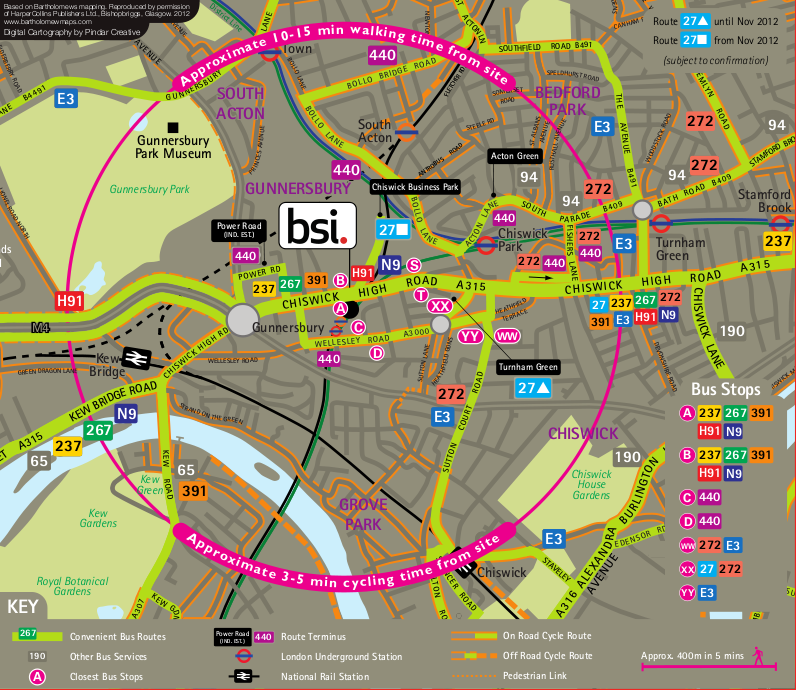

Search
Home
About
Travel Information »
»
By Underground
By Train
By Bus
By Foot
By Bicycle
By Motor Vehicle
Gallery
FAQ
Contact Us
Go to...
Home
About
Travel Information
Gallery
FAQ
Contact

Journey Planner
Station or stop
Postcode
Address
Place of interest
Station or stop
Postcode
Address
Place of interest
More options
by bus
add info
by foot
add info
by car
add info
by tube and overground
add info.
by train
add info.
by coach
add info.
by cab
add info.